谁说了算
权力的游戏，从部落玩到选票
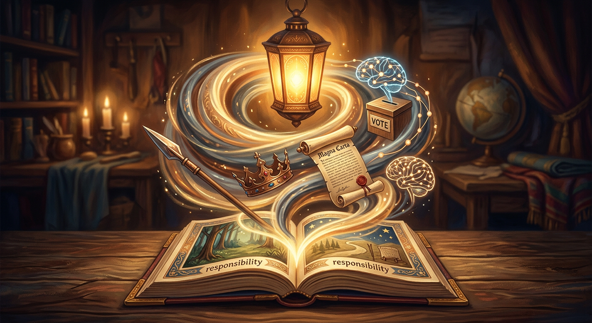
远古时代，一个部落谁说了算？多半是最强壮、最会打猎的那个人。
这很合理：猛兽来了他顶上去，食物不够他带队去找。大家服他，是因为他能保护大家。
这就是权力最原始的样子——谁有能力带大家活下去，谁就说了算。
可是，拳头有个大问题：它会老，会输。等他打不过更年轻的人，权力就得换人。靠拳头，权力永远坐不稳。
后来，首领们想了个办法，让权力不用每次都重新打一架。
办法很简单：我死后，位置传给我儿子，儿子再传给孙子。这叫'世袭'。
从此，谁说了算，不再看谁最能干，而是看谁是谁的儿子。
好处是稳定，不用打了。坏处也明显：万一接班的孩子没本事呢？血统，把'能者居之'变成了'生得好就赢'。
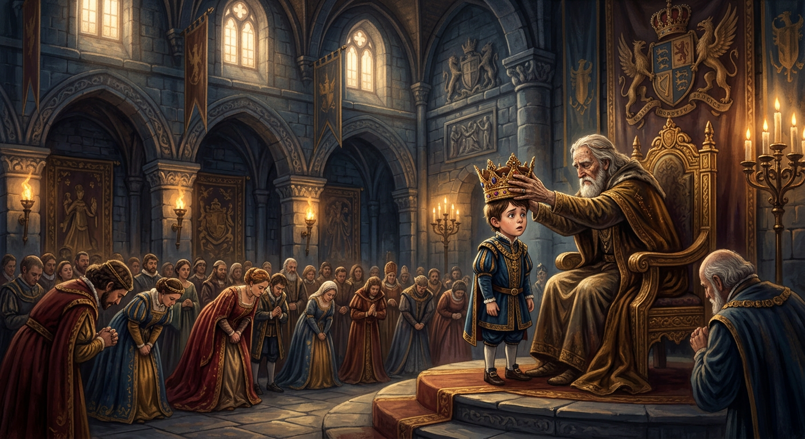
光靠血统，还是有人会不服：'凭什么你家世代当王？'
于是统治者讲了一个更厉害的故事：'我的权力，是神给的。'
埃及法老说自己是太阳神的儿子，中国的皇帝自称'天子'——上天的儿子。你要反他，就是反天、反神。
这个故事太管用了。只要大家信了，没人敢反抗。权力第一次发现：比起拳头，一个好故事，才是最省力的统治工具。
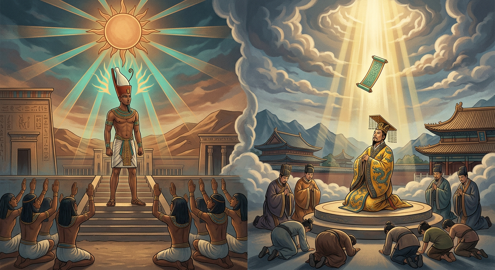
在中国，秦始皇干了一件前所未有的事：把七个国家打成一个，全天下的权力，攥在他一个人手里。
他统一文字、统一度量衡、修长城、修驰道。一个人拍板，全国照办，效率高得惊人。
可问题是：权力太集中，对错全看一个人。他英明，天下受益；他犯浑，全国遭殃。
果然，他死后没几年，大秦就垮了。一个人说了算，快是快，可一旦错了，没人拉得住。
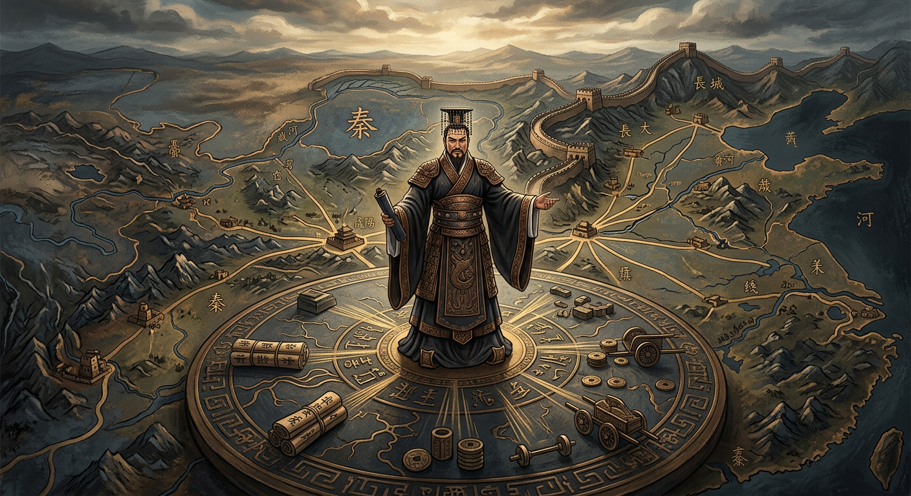
差不多同一时期，罗马人走了另一条路。他们赶走了国王，说：权力不能给一个人。
他们设了个'元老院'，由一群有经验的贵族老人商量着来，还设了两个'执政官'，互相牵制，谁也不能独断。
一个人犯错，还有人纠正。这让罗马强大了好几百年。
你看，这是和秦始皇完全相反的思路：与其赌一个人永远英明，不如让权力互相盯着。
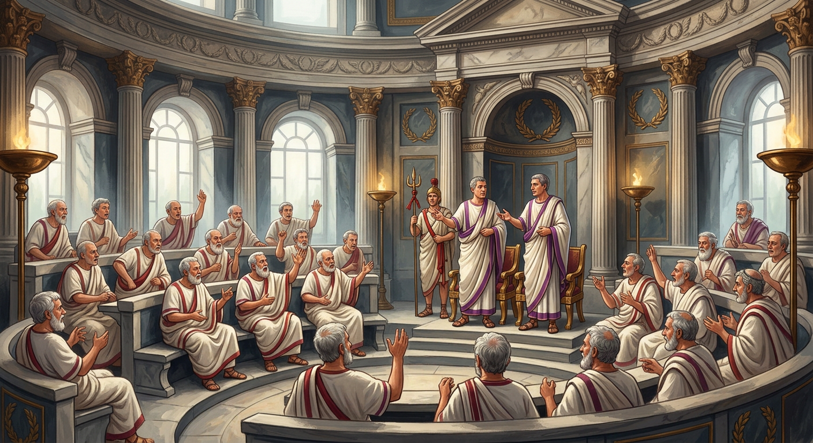
国王权力再大，就没人管得了他吗？英国的贵族们不服。
1215年，他们逼着国王签下一份文件，叫《大宪章》。上面写着一句石破天惊的话：
国王，也要遵守法律。不能想抓谁就抓谁，想收多少税就收多少税。
这是人类历史上第一次，把最高的权力，也关进了'规则'的笼子里。从此有了个新观念：不是你官大你就对，而是规则比人更大。
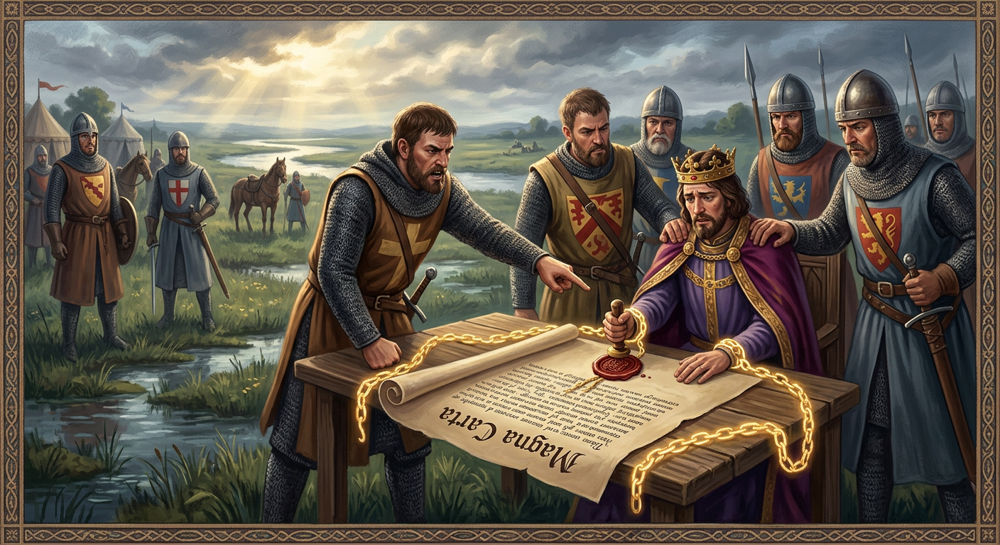
大宪章管住了国王一点，但老百姓还是没权。几百年后，法国人忍不了了。
还记得我们在《阶级的秘密》里讲的吗？教士和贵族只占2%，却免税；98%的人养活他们。
1789年，人民爆发了，喊出'自由、平等、博爱'，把国王送上了断头台。权力，第一次号称要还给'人民'。
可接下来的故事有点乱：革命之后是恐怖、是混战、最后又来了个皇帝拿破仑。推翻旧权力容易，建好新权力，难得多。
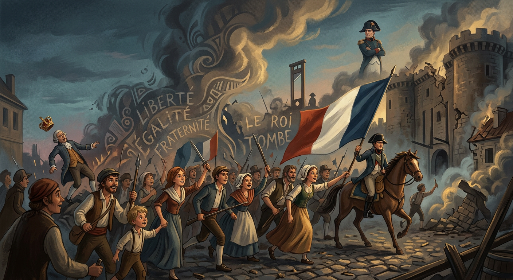
折腾了很久，人类慢慢找到一种办法：一人一票，投票选说了算的人。
这个办法好在哪？权力来自大家的同意，选得不好，下次还能换掉。和平、有序。
但选票也有陷阱。有人靠讲好听的话骗票；有人许诺'发福利'拉票，其实是要拿你的钱买好；还有人多欺负人少。
所以投票不是万能的。它只是让人类的权力游戏，从'动刀动枪'，变成了'动嘴动票'——这已经是巨大的进步。
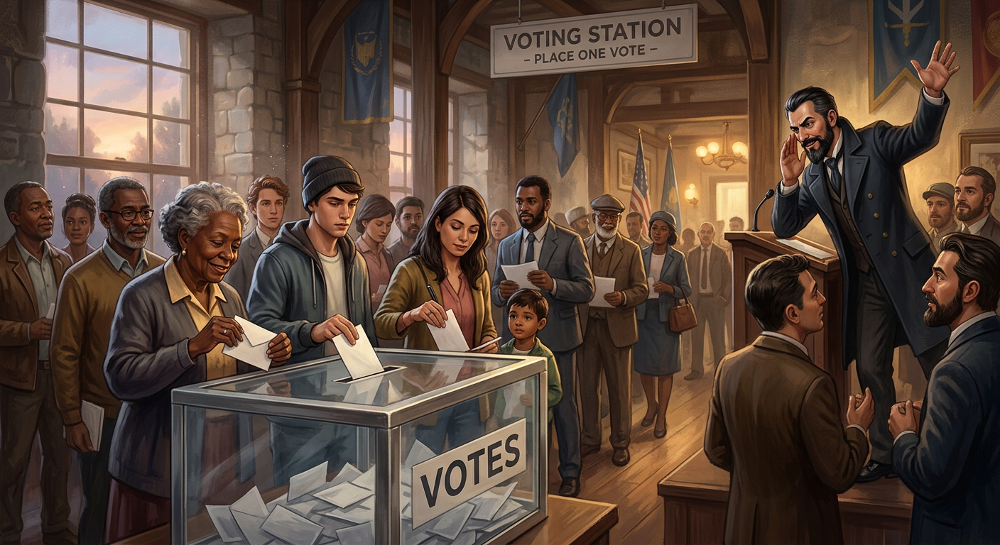
说来说去，权力到底靠什么撑住？其实就三样东西。
第一是枪杆子：武力和军队，你不服就压你。这是最硬的。
第二是笔杆子：宣传和故事，让你从心里认同它。还记得'君权神授'吗？这是最巧的。
第三是钱袋子：掌握钱的分配，让跟着你的人有好处。这是最实的。
从古到今，不管叫什么名字的权力，扒开看，都离不开这三根柱子。看懂了它们，你就看懂了权力的底牌。
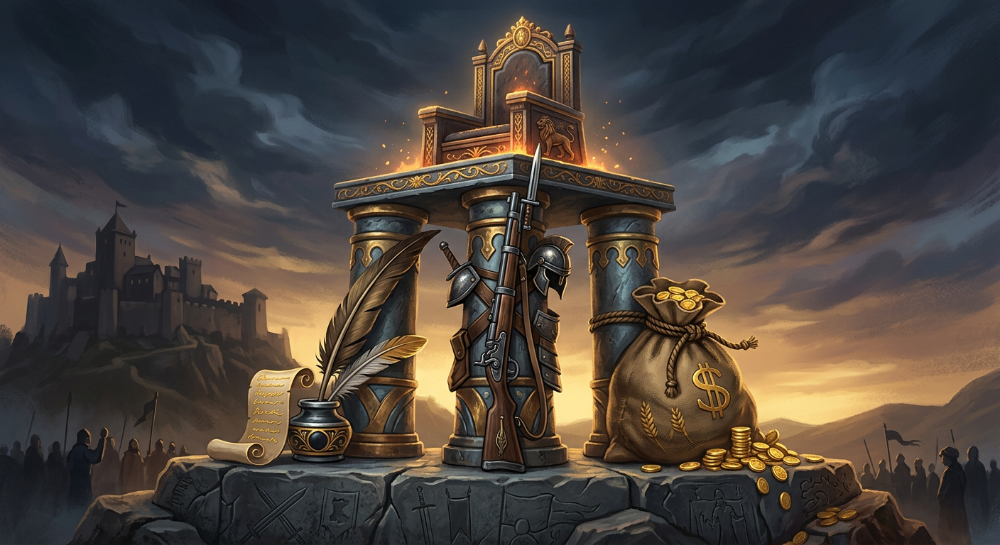
还有一种权力，不在台前，藏在文件和公章后面——官僚。
国王、总统换来换去，但真正管事的，常常是那群办手续、盖公章、执行规则的人。
你想办个证、批个项目，快还是慢、批还是不批，往往他们一句话。他们官不大，可实权不小。
这种权力的好处是专业、稳定；坏处是容易踢皮球、效率低、没人负责。看不见的权力，同样需要被监督。
到了今天，权力又多了一种你想不到的样子——算法。
2026年，越来越多的事，不是人在做决定，而是AI：银行贷款批不批、简历先筛掉谁、你刷到什么视频、甚至路口红灯停几秒。
这些决定影响着你我，可它是怎么算的，没人告诉你，你也问不着。
这就提出了一个新问题：当机器开始'说了算'，谁来管它？它会不会偏心？犯了错找谁说理？这是你们这一代人，必须面对的新权力。
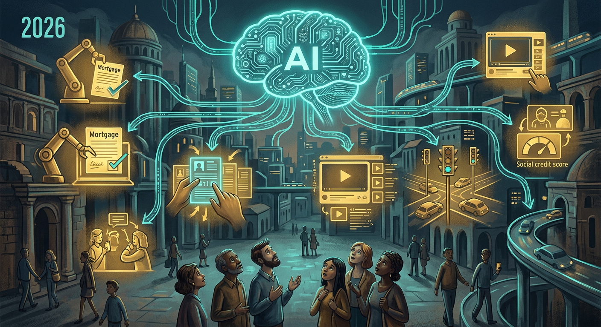
点点，讲了一路权力，从拳头到选票再到AI，你可能觉得权力很吓人。
其实权力本身没有好坏，关键看它用来干什么、又被什么管着。
靠拳头和吓唬的权力，让人怕，但坐不长；靠故事和福利的权力，让人跟，但可能骗；只有靠本事、讲道理、接受监督的权力，才让人真心服。
以后你也会有自己的'权力'：当班长、带团队、甚至只是影响身边的人。记住——
真正的权力，不是让多少人听你的，而是让多少人信你。权力越大，责任越大。
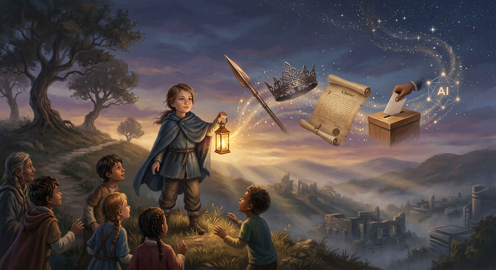